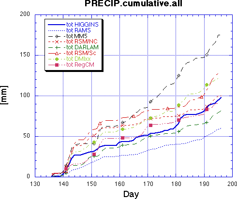

Cumulative Precipitation
Curves show the total precipitation accumulated daily by each model listed in the key for the "Upper Mississippi" domain (37N-47N; 89W-99W).
[Higgins = gridded observations; RSM/NC = NCEP RSM; RSM/Sc = Scripps RSM]
